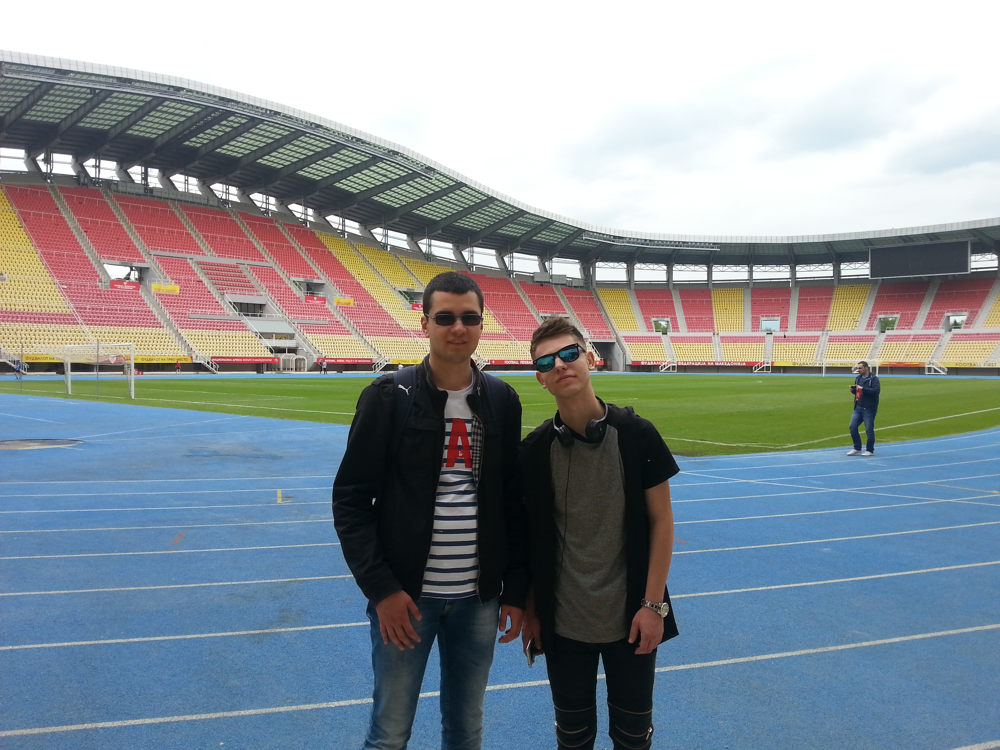
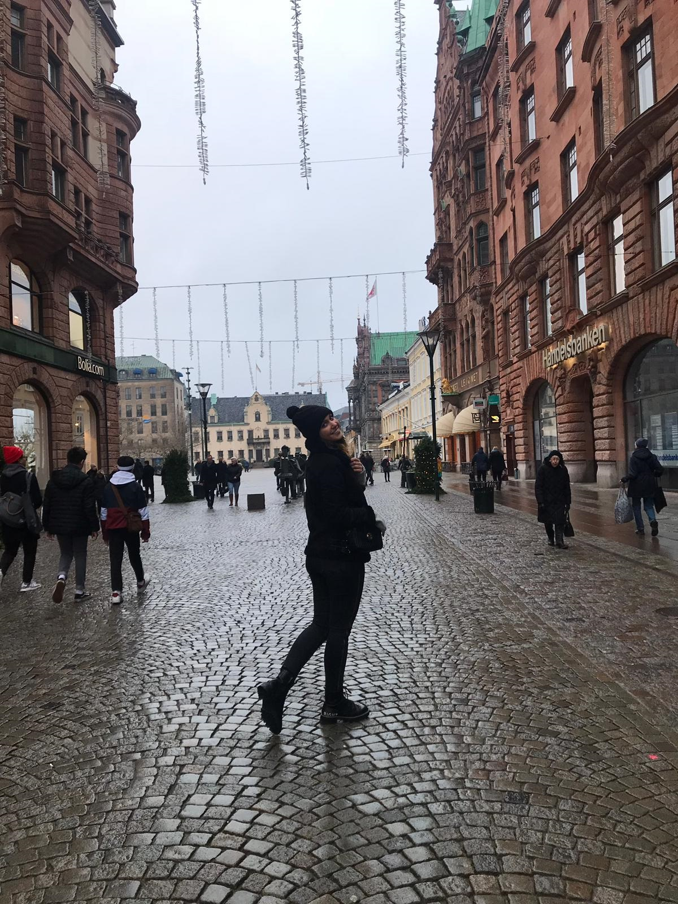

NOVI PAZAR
Možete nas naći na:


Naša putovanja
Ono što nas povezuje je velika želja za posećivanjem novih destinacija, upoznavanjem novih ljudi i različitih kultura, jednostavno rečeno, želja za putovanjem. Zapitali smo se odakle nam ta velika ljubav i želja za putovanjima, da li su na to imali uticaj naši roditelji ili smo nakon odrsatanja sami otkrili čari putovanja. Svi smo negde započeli s tim prvim putovanjem, onim osećajem uzbuđenosti dan pre putovanja. Onaj dan u godini kada nam ne treba alarm za buđenje, jer ne možemo spavati od uzbuđenja i jutro dočekamo otvorenih očiju. Tih putovanja se možda i ne sećamo, jer smo ipak mi bili samo deca, ali s vremenom i odrastanjem su počela sećanja i počeli smo razumeti šta znači ona čarobna rečenica "Idemo na put!". Danas više ne putujemo sa roditeljima, promijenili smo društvo s kojim putujemo ali i dalje nastavljamo otkrivati nova mesta.
Dženanovo putovanje
Makedonija je dugo vremena bila na mojoj listi želja.
Nekoliko pokušaja odlaska u Makedoniju se završilo promjenom izbora destinacije.
Kao logičan početak obilaska neke države najčešće smatram posjetu glavnom gradu, tako da sam se i ovaj put odlučio za Skoplje.
Kao drugu opciju sam razmatrao Ohrid, ali sam njega ostavio za neku drugu priliku.
S obzirom da smo do Skoplja morali preći dobar dio teritorije Srbije,
krenuli smo u 5 ujutro kako bismo maksimalno iskoristili dan pred nama.
Posebno mi je bio interesantnan jug Srbije koji je u mojim očima izgledao zaboravljeno i otuđeno,
u potpunom kontrastu sa urbanom prestonicom.
Konačno dolazimo i do onog dela kada je trebalo da se upoznam sa Skopljem i prenesem vam utiske o tome.
Širu gradsku jezgru čine tipični komunistički stambeni blokovi kakve sam viđao i u bosanskim gradovima poput Tuzle i Zenice.
Nema tu neke lepote, ali opet se vidi planska gradnja što u današnje vreme na našim prostorima postaje misaona imenica.
Ono što nikako nisam mogao dočekati da vidim jeste centar Skoplja.
Odlučio sam zanemariti tuđe utiske i potpuno otvorenog srca i uma zakoračiti u centar grada,
te doneti vlastiti zaključak o onome što je urađeno. Nakon kraće šetnje od autobuske stanice ka centru,
visoki betonski blokovi su počeli polako da iščezavaju, a uskoro su se ukazale prve naznake novog Skoplja.
Prva je pred mene iskrsla zgrada Ministarstva pravde, višespratnica boje terakote ukrašena korintskim stubovima i likom Temide,
grčke boginje pravde.
Ubrzo smo stigli i do glavnog gradskog trga koji krasi spomenik-fontana na čijem se vrhu nalazi najveći konjanički kip koji sam ikada video.
S jedne strane Vardara me dočekuje nekolicina fontana, ali moju pažnju privlače dve.
Prva je navodno posvećena majkama Makedonije i prikazuje četiri žene, od kojih je jedna trudnica,
druga doji, a preostale dve drže djecu u naručju, odnosno krilu.
Druga fontana prikazuje Filipa II Makedonskog, i njegovu porodicu.
S obzirom da sam veliki ljubitelj fudbala, nisam mogao a da ne posetim fudbalski stadion "Filip II Makedonski".
Skoplje je grad koji se ne može obići za jedan dan. Žao mi je što nisam isplanirao duže posetu Skoplju, ali i pored toga dan proveden u Skoplju je na mene
ostavio poseban utisak i probudio posebna osećanja. Nadam se da ću uskoro imati priliku da opet odem.

Selmino putovanje
Od svih putovanja i svih mesta na koja sam bila, iako su mi sva draga, moram izdvojiti jedno omiljeno, koje je na mene ostavilo poseban utisak.
Putovanje koje bih izdvojila, jeste moje najduže putovanje koje je trajalo mesec dana. Možda mi je baš zato i omiljeno.
Za kratko vreme sam odlučila da ću da idem. Nisam ga dugo planirala, bilo je spontano.
Tada sam i prvi put letela avionom. U tom trenutku to je za mene bio veliki doživljaj. Osećala sam se kao malo dete. Nisam osećala strah, samo uzbuđenje.
Kada je avion poleteo i digao se u nebo, i kada sam bila okružena oblacima, koji su se poput polja pamuka beleli,
dok su sunčevi zraci tom prizoru davali dodatni sjaj,
u mom mozgu je ostala ta slika, koju nikad neću zaboraviti.
Išla sam u posetu sestri u Malme, Švedska.
Kada sam tek stigla bila sam srećna sto imam 30 dana da sve obiđem.
Svaki dan sam posećivala nova mesta i otkrivala posebne čari tog grada.
Grad Malme je manji grad, multietničkog stanovništva. Upravo ta raznolikost čini Malme posebnim.
Niske kućice od nekoliko spratova, široki prozori bez zavesa i roletni i lampe ispod njih, tradicionalna Švedska arhitektura i
način uređivanja enterijera nisu sastavni deo ovog "južnjačkog" skandinavskog grada, budući da je Malme po svom izgledu potpuni izuzetak.
Visoke građevine, sa dosta detalja, obojene jarkim bojama i drveni prozori sa gustim, drvenim roletna odaju utisak da Malme nije smešten
u hladnoj Švedskoj već u nekoj zemlji Zapadne Evrope.
Reka i more donese ovom gradu više Sunca koje se pomalja kroz zimske sive oblake i čini da je januarske temperature ne budu prave severnjačke,
već takve da i turisti iz drugih krajeva sveta mogu lako da im se prilagode.
Ravnica "kao na tacni" čini da se lepote Malmea mogu sagledati u jednoj ravni.
Kaldrmisane ulice rezervisane su isključivo za pešake, bicikliste, dok automobili gotovo da izostaju u ovom gradu.
Visoke katedrale, trgovi i nesvakidašnji spomenici stvaraju utisak da se ulaskom u srce starog grada ulazi u bajku.
Srce grada je ispunjeno cvećem, zimskim ružama u januarskim bojama koje stvaraju kontrast u odnosu na sive oblake.
Visoke šarene kuće poređane su u nizu, kao deca koja se drže za ruke i stvaraju zatvorene pravougaonike kojima je oivičen stari deo
grada, jer na samo dvadesetak minuta hoda od tih pravougaonika, smešteni su visoki oblakoderi, stakleni poslovni prostori i šoping centri
koji nas vraćaju u 21. vek.
Pored mesta koje sam posetila i obišla, upoznala sam puno različitih ljudi, različitih nacionalnosti i različitih kultura.
Svi oni su na mene ostavili poseban utisak.
Neke od njih sam puno zavolela i danas se čujem sa njima, i kada opet odem u Malme obavezno se vidimo.
S obzirom da je Kopenhagen udaljen od Malmea pola sata vozom, sestra i ja smo odlučile da ga posetimo.
Jeste ta poseta trajala jedan dan, ali sam uspela dosta toga da vidim.
Mogu slobodno reći da je Kopenhagen grad koji svi trebaju da posete, jer zaista on ima neku čudnu magiju.
Jedini ružan deo ovog putoavanja jeste kada sam trebala da se vratim kući.
Tom gradu se uvek rado vraćam.

Vrati na vrh